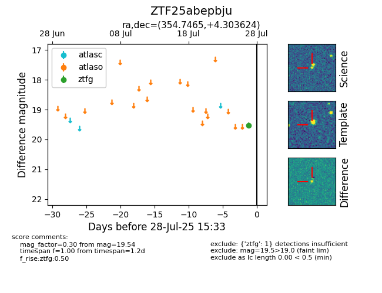

Target ZTF25abepbju at 2025-07-28 15:33, see:
FINK: fink-portal.org/ZTF25abepbju
Lasair: lasair-ztf.lsst.ac.uk/objects/ZTF25abepbju
ALeRCE: alerce.online/object/ZTF25abepbju
alt names
ZTF25abepbju (ztf,fink)
coordinates:
equatorial (ra, dec) = (354.7465,+4.30362)
galactic (l, b) = (91.0779,-54.02586)
photometry
last ztfg=19.54
1 ztfg detections
